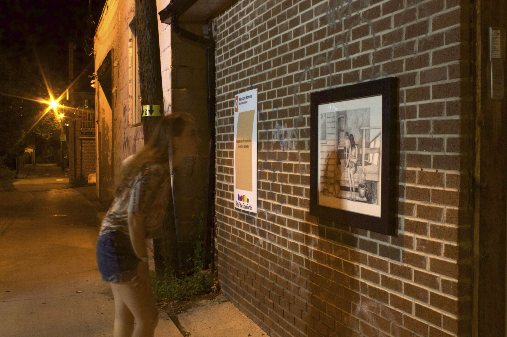

← Portfolio


Many Long Moments
A collection of hand-drawn works based on photographs of locals in their homes and businesses along a laneway between Lamb and Gilliger Avenues. What a camera captures in a fraction of a second requires days of pencil work to reproduce — time spent becoming intimately familiar with every detail: facial expression, hula hoop, pot plant, brick wall.
Installed in a semi-public laneway to encourage accidental discovery by neighbours, children, and teenagers passing through. The work reveals the complex web of connections in the neighbourhood by featuring faces, furniture, and interiors that locals recognize as their own.
